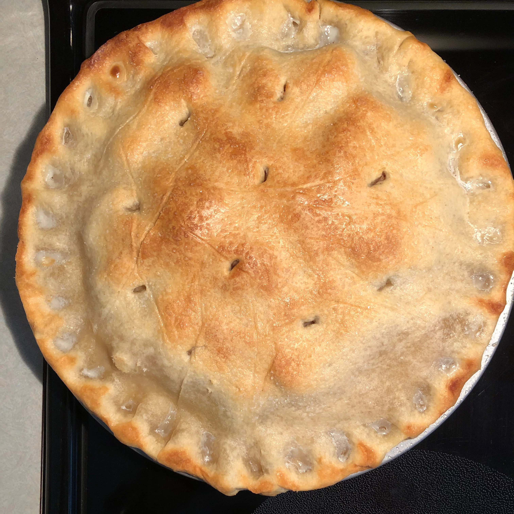

Description
On Sept. 30, 1955 legendary actor James Dean pulled into Tip’s coffee shop
in Castaic in his souped-up Porsche.
He ordered a cold glass of milk and
a slice of apple pie.
It was his last meal before dying in a car crash in the
San Joaquin Valley, up near Cholame.
Ingredients
- 1/3 cup packed light brown sugar
- 1/3 cup white sugar
- 1 tablespoon all-purpose flour
- 1 teaspoon lemon juice
- 1/3 teaspoon ground cinnamon
- 7 1/2 cups peeled, cored and sliced apples
- 1 cup raisins
- 1 recipe pastry for a 9 inch double crust pie
- 1 egg
Steps
-
Preheat oven 425 degrees F (220 degrees C).
Spray deep dish pie plate with cooking spray.
-
Combine white sugar, light brown sugar, flour, lemon, cinnamon, and mix well.
Add apples and raisins to sugar mixture; stir until fruit is well coated.
-
Spoon apple mixture into pie crust.
Place second piecrust on top of filling, and trim edges.
Lightly glaze top of pie with a beaten egg,
then sprinkled with a little sugar.
-
Bake till golden brown, about 35 to 40 minutes.
Place on a wire rack, and cool 30 minutes.
return to home page